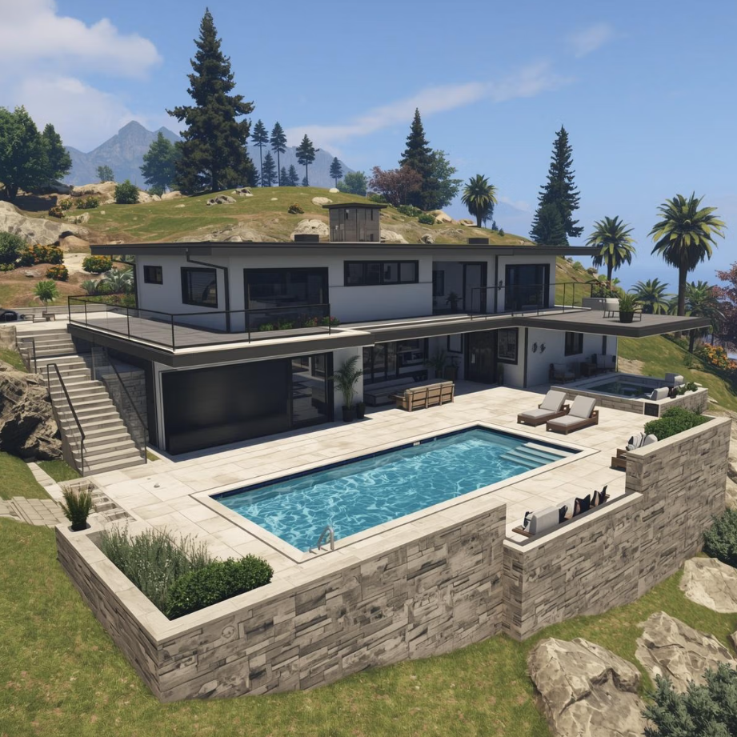

Welcome to the Project!
Project: Where I Live
Welcome, everyone! In this project, we are going to explore our world: from the rooms in our house to the streets of our town.
Have you ever dreamed of designing your ideal home? Or being a local guide and helping a tourist find the best shop in town? This is your chance! We will use English as our tool to communicate and Art to create amazing designs.
What are we going to do?
Design: Creating your Dream House using Artificial Intelligence.
Explore: Discovering the most important places in our town.
Interact: Learning how to give directions and compare places using English.
Final Product: A collaborative Padlet map to show the world our ideal city.
Let’s start this journey!
First, take a look to my dream house. Isn't it great?
